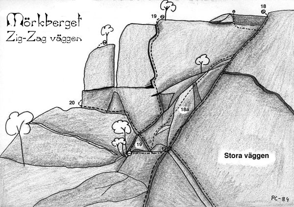
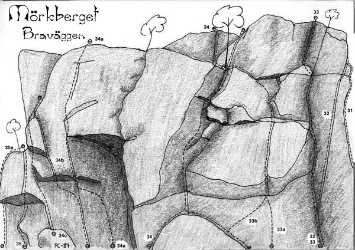

Mörkberget
Lat: 61.670979451447785
Long: 16.214447021484375
Access
Det finns häckande fåglar på Mörkberget vilket innebär klätterförbud från 1 april till 31 juli.
Allmänt
Mörkberget ligger ca 1 mil söder om Järvsö på östra sidan av Ljusnan och har ett 70-tal leder, huvudsakligen i 5:a- och 6:a-registren. Mest tradklättring eller mixade säkringar, men även enstaka sportturer. Leder av 10-55 m längd. Berget har de senaste åren fått rykte om sig att vara helt igenmossat, vilket kanske inte var helt osannt. Detta har det blivit ändring på tack vare Michael Ärfstöm och Emil Persson m.fl. som sopat fram det mesta av vildmarksväggen och stora väggen.
Uppdatering: Viltmarksväggen blev borstad igen Sept. 2010.
Kommunikationer
GPS-koordinater för Mörkbergets topp: Lat: N 61º 40' 8.77" Long: E 16º 12' 48.99"
Ungefärliga GPS-koordinater för klippan: Lat: N 61º 39' 58.7" Long: E 16º 13' 5.82"
Väg till lägerplats
På vänster sida i slutet av Hästhagsvägen finns en stig som börjar vid en skylt märkt med "Mörkberget". Följ denna rakt in cirka 10-20 meter till den korsar en bred, upptrampad stig, märkt med blå färg på träden. Sväng vänster in på denna stig och gå cirka 500 meter och sväng av, åt vänster på en mycket mindre stig som är märkt med skylten "Tältplats", 10-20 meter innan stigen korsas av en bredare skogsväg (eller följ de blåa markeringarna vidare på den stora stigen för att komma till berget).
Bekvämligheter
Dass, medtag eget papper. Eldstad. Allt vatten måste medtagas, enligt markägarens vilja.
Historik
Väggar
Över hela sydsidan av berget finns ett komplext, utspritt system av
gnejsväggar. Längst till höger finns Planetväggen, en brant vägg med
tunna sprickor. Längre till vänster ligger Stora väggen, en ca 45 m
hög, 70 graders vägg med fin sprick- och väggklättring. I vinkel mot
Stora väggen ligger Zig-zag väggen, med ett fåtal turer. Längre till
vänster finns flera väggar av 10-30 m höjd. Här finns några av bergets
finaste leder på väggpartier som Cirkusväggen, Vildmarksväggen och
Stålväggen.
Planetväggen
[[Bild:Jupiter.jpg|thumb|200px|right|Kent Andersson på Jupiter (6+/7-), Mörkberget, 1986.
Foto: Per Calleberg]]
Firningsstationer finns mellan utstegen på Pluto och Neptunus och
mellan utstegen på Saturnus och Uranus.
{|
|- valign="top"
| width=300 |
- 1a
- Planets pilot
- 6-
- Ligger till höger om själva planetväggen. En kort vägg följt av litet scrambling leder upp till det tydliga taket som elegant passeras på bredaste stället.
- 1
- Yttre rymden
- 6-
- Sparsamt säkrad väggklättring i högerkanten av väggen
- 2
- Pluto
- 5
- Fritt: Torbjörn Nilsson och Buster Delin 1983. Tunn, fin klättring. Inte alltför välsäkrad
- 3
- Neptunus
- 5+/6-
- Fritt: Birger Hedlund och Kent Andersson, 1984 Fin handjamspricka. Utsteget är kruxet.
- 4
- Uranus
- 5+/6-
- Fritt: Buster Delin och Per Calleberg, 1984 Ihållande väggklättring.
- 5
- Saturnus
- 5-
- Fritt: Per Calleberg och Buster Delin, 1984 Spricklinje till vänster om "Uranus". Gemensamt utsteg med "Uranus".
- 6
- Solstrålen
- 5-
- Klättra väggen mellan "Solnedgången" och "Saturnus" upp till en hylla. Fortsätt sedan snett upp t h över ett sva.
- 7
- Solnedgången
- 3-
- Rännan tv om "Saturnus".
- 8
- Jupiter
- 6+7-
- Rakt igenom det tydliga taket i vänsterkanten av Planetväggen. 1 bult. Små friends rekommenderas i horisontalsprickan under taket.
Lägerväggen
Firningsstation finns ovanför utsteget på Ghostbuster. Används även
för April april.
- 9b
- Schritt tempo
- 6+
- Startar vid Eggens insteg och och går diagonalt upp åt höger, längs en osannolik linje, för den lätt överhängande väggen ovanför. Runda kanten och sedan följer lättare klättring upp till en hylla med träd och standplats.
- 9a
- Legionären
- 7
- Den överhängande handjamsprickan några meter till vänster om Schritt tempo. Tung och pumpande.
- 9
- Eggen
- 3+
- Tydlig diederlinje mindre än 50 m till höger om Stora väggen. Leder upp till en stor sten med eggvass kant. Utsteget består av att följa eggen rakt upp.
- 10
- Ghostbuster
- 5+
- Ligger rakt ovanför lägerplatsen. Följer två korta diedrar upp till en stor tall och standplats. Sedan svaklättring till toppen.
- 11
- Lurad
- 5
- Klättra en brant vägg ovanför lägerplatsen (1 bult). Sedan layback i hörnet ovanför. Går ihop med "November" strax under standplatstallen.
Stora Väggen
Firningsstation finns ovanför utstegen på November/Combat.
{|
|- valign="top"
| width=250 |
- 12
- November
- 4-
- Startar bakom högra hörnet på stora väggen. Traversera vänster längs en tydlig hylla ca tre meter upp, runt hörnet in på stora väggen. Man kommer då upp till ett par stora flak, dessa klättras upp till en liten hylla. Här kommer man upp till standplatstallen på "Potent ultra macho". Strax ovanför den tallen gör man en travers höger och kommer in på en ramp som klättras diagonalt upp åt vänster tills man befinner sig under en större tall. Där klättrar man rakt upp till tallen och gör standplats. Andra replängden traverserar antingen rakt vänster från tallen längs en tydlig hylla in till spricksystemet eller följer en diagonal ramp upp till det samma. Man följer sedan den grova sprickan till toppen.
- 13
- April April
- 6-
- Start i sprickor t h om "Potent ultra macho", vidare upp över en rödaktig vägg och upp till standplatstallen på November. Sedan rakt upp över väggen med tre borrbultar som inte sitter så tätt.
- 14
- Potent Ultra Macho
- 5+
- Nära väggens högerkant mitt för en stor tall, finns en tydlig spricka som ca 10 m upp grenar sig i ett "Y". Man följer den vänstra sprickan upp till en ramp som sedan klättras ned ett par meter till en liten tall, där man kan göra standplats. Andra replängden följer rampen tills man kommer upp i nischen vid "Lilla menasse". Här traverserar man vänster några meter och klättrar den tydliga sprickan rakt upp tills man kommer in på "November" några meter under toppen.
- 15
- Lilla Menasse
- 6-
- Starta som för "Megatrend", men klättra diagonalt upp åt höger mot en liten nisch. Klättra sedan sprickan ovanför den tills man kommer in på "November", som sedan kan följas till toppen.
- 16
- Megatrend
- 6-
- Fritt: (nedre) Born Braaten och Bent Soinung, 1984. (övre) Kent Andersson och Birger Hedlund, 1984 Fem meter nedanför "Combat". Starta i en kort spricka diagonalt upp åt höger. Efter några meter kliver man vänster över i en spricka som leder upp till den krokiga tallen. Standplats vid blocket på hyllan. Följ den sick-sakande flakformationen diagonalt upp åt vänster tills den blir vågrätt. Klättra här rakt upp över en knoppig vägg tills ett par sprickor nås. Traversera längs dessa vänster tre meter och fortsätt sedan rakt upp över en slät vägg, till en standplatshylla med en tall och en björk på. Totalt 4-5 bultar och en borrbult.
- 17
- Combat
- 5
- Övre delen: Torbjörn Nilsson och Per Calleberg, 1982 I sin helhet: Torbjörn Nilsson och Buster Delin, 1983 Starta där rännan i väggens vänsterkant börjar. Följ den tydliga grova sprickan tills den upphör. Kort travers höger till en borrbult och sedan upp till den krokiga tallen. Standplats vid det stora blocket på hyllan. Fortsätt sprickan ovanför till toppen. En borrbult. Variant: Gå rakt upp t v om borrbulten [6-]
- 18
- Lugna Gatan
- 5+
- Insteget börjar i rännan ovanför "Combat", följer sedan hörnet mellan stora väggen och zig-zag väggen raktupp till toppen. Fin, tunn klättring. Välsäkrad med små kilar.
Zig-Zag Väggen

- 18a
- Panorama
- 5
- Svaklättring nedanför Zig-zag och till vänster om Lugna gatan. Efter det branta kruxet lättar klättringen succesivt av. Utsteg åt vänster under toppen eller gemensamt med Lugna gatan. 2 borrbultar och en fast bult.
- 19
- Zig Zag
- 6
- Starta som för "Ornitologleden", men efter första korta diedret kliver man höger över ett sva. Svaet klättras tills man befinner sig rakt under den tydliga zig-zag sprickan. Klättra det korta hörnet upp till sprickan och följ den till toppen. Kan vara att ha dubbelt av camalot#3 eller motsvarande.
- 20
- Ornitologleden
- 3
- Går uppför väggpartiet till vänster om stora väggen. Klättra rännan i stora väggens vänsterkant upp till en hylla med en tall. Klättra två korta diedrar och traversera vänster runt ett block, till en hylla med en tall. Lätt klättring till toppen.
Buskväggen
Ligger mellan Zig-zagväggen och cirkusväggen. Hade 1987 inga kända leder, men det kanske har ändrat sig under de senaste 20 åren.
Cirkus Väggen
- 21
- Mörkrett
- 4-
- I första inskärningen, dryga 50 m till vänster om stora väggen och till vänster om Buskväggen finns flera leder. Till höger om ett stort tydligt dieder med ett fastkilat block i, finns ett dött träd. Bakom det går "Mörkrett", längs en trappstegsformation åt höger. Avslutas med ett svasteg.
- 22
- Ekot
- 4+
- Tydlig spricklinje runt hörnet t h om "Åkes led". Det kan vara bökigt att ta sig upp till insteget, men sedan fin klättring.
- 23
- Åkes led (Mörk-två)
- 5-
- På en hylla ca tio meter nedanför det tydliga diedret med det fastkilade blocket växer ett antal tallar. Om man följer hyllan åt vänster runt ett hörn, kommer man till "Åkes led". Man kan tydligt se leden tack vare att den är så ren. Leden följer en grov sick-sackande spricka som toppas av ett överhäng. Man följer sprickan under detta ut åt vänster och upp.
- 23a
- Största möjliga tystnad
- 6+
- Ligger längst t h på den egentliga Circusväggen, runt hörnet t v om Åkes led. En bred spricka leder upp till ett tunnt högervänt dieder. Avslutas med en kort hangel på goda grepp åt höger. Samma standplats som för Åkes led. 4 bultar.
- 24
- Gästspel
- 5+
- Fritt: Lars Grankvist och Åke Danielsson, 1986 Sprick- och kamintur i högra delen av Circusväggen.
- 24a
- Daladansen
- 8-
- Den tydliga (?) linjen till vänster om Gästspel. Väggklättring för upp till tvillingsprickorna som börjar på halva vägghöjden. Sedan följs dessa upp. 3 borrbultar.
- 24b
- Scnabelkäse
- 7-
- Går till vänster om Daladansen och har i stort sett samma insteg som denna. Går rakt upp längs en tunn spricka och avslutas med en mycket tunn travers åt vänster. Gemensamt utsteg med Circus maximus. 2 bultar och 1 borrbult.
- 25
- Circus Maximus
- 5+
- C-formad spricka i väggens vänstra del
- 26
- Luftakrobatik
- 6-
- Fritt: Buster Delin och Björn Isacsson, 1991 Vänstra utsteget på "Circus Maximus".
Vildmarksväggen
Firningsstationer finns ovanför utstegen på Sällsamma
besynnerligheter, Familjefadern och Falköga/Scener ur ett äktenskap.
{|
|- valign="top"
| width=300 |
- 27
- Mitt liv som hund
- 6-
- Dieder längst upp i högerkanten av "Vildmarken". Säkras med småkilar.
- 27a
- Sladdbarnet
- 7-
- En brant sekvens leder upp till plattan och areten t h om Safari. Säkras med småkilar och 1 borrbult.
- 27b
- Safari
- 6
- Följer den tydliga spricklinjen till höger om Sällsamma besynnerligheter. Utsteg via en kort dieder från hyllan strax under toppkanten. Två fasta bultar.
- 28
- Sällsamma Besynnerligheter
- 5+
- Fritt: Buster Delin, Per Calleberg och Peter Brolin, 1987 Startar i det lilla diedret som toppas av ett tak. Runda taket till höger. Leden slingrar sig sedan, via ett flak, i stort sett rakt upp över väggen till ett utsteg som är gemensamt med Gökboet. 2 borrbultar och 2 fasta bultar.
- 29
- Gökboet
- 6+
- Väggklättring förbi en borrbult (krux) leder upp till en liten hylla. Följ sedan det bågformiga diedret ovanför tills det är möjligt att gå rakt upp.
- 30
- Mården
- 5+/6-
- Följ sprickan t v om "Gökboet" och sedan snett uppåt vänster över väggen. Delvis litet pillriga säkringar. Nyborstad Sept. 2010
- 30a
- Familjefadern
- 6-
- Elegant väggklättring mitt emellan Falköga och Mården. Börjar med lätt, men osäkrad, transportklättring, upp till en hylla. Här blir väggen slätare och det är bara att följa linjen med borrbultar. Efter sista borrbulten går man rakt upp till en firningsstation. 4 borrbultar. Nyborstad Sept. 2010
- 30b
- Falköga
- 6+
- Spikrak linje till höger om Scener ur ett äktenskap. Lättare, men osäkrad klättring leder upp till den släta slutväggen. Leden slutar vid en firningspunkt med två borrbultar och kedja. 2 borrbultar.
- 30c
- Scener ur ett Äktenskap
- 6+
- Väggklättring till höger om Ungkarlsliv leder upp till en spricklös dieder, som toppas av ett överhäng. Efter detta leder en kort travers åt höger till en firningspunkt med kedja ovanför Falköga. 3 borrbultar
- 31
- Ungkarlsliv
- 6-
- Fritt: Per Calleberg och Kent Andersson, 1987 Vacker och luftig klättring längs den tydliga areten. 4 borrbultar.Nyborstad Sept. 2010
- 32
- Monty Pythons dansande tänder
- 6
- Fritt: Harald Brandt och Per Calleberg, 1987 Följer den eleganta fingersprickan på väggen till höger om Vän nr 4 saknas. Markant krux under den tydliga tvärsprickan. Tyvärr finns vissa möjligheter att "fuska" genom att kliva ut på steg på areten.
- 30d
- Vilddjuret
- 7+
- Går långt till vänster på vildmarksväggen (till vänster om "Scener ur ett äktenskap"). Borde finnas ett par bultar. (Rapporterad av Robert Kreft på Sundsvalls Klätterklubbs hemsidas diskussionsforum).
- 30e
- Håkan Wankes led
- 6/6+
- Bredvid "Familjefadern". (Oklart om den går t.h. eller t.v. om "Familjefadern", men det torde framgå av bultar (?)). (Rapporterad av Robert Kreft på Sundsvalls Klätterklubbs hemsidas diskussionsforum). Sannolikt t.h. om "Familjefadern", 3 borrbult, Nyborstad Sept. 2010
Bra Väggen

[[Bild:Attack.jpg|thumb|250px|right|Buster Delin leder Alltid Attack (6+) på Mörkberget 1989.
Foto: Per Calleberg]]
Firningsstation finns ovanför Alltid attack.
{|
|- valign="top"
| width=300 |
- 33
- Vän nr 4 saknas
- 5-
- Tydligt diedersystem som består av tre korta diedrar med hyllor mellan. Vacker layback i utstegsdiedret. Variant: Undvik utstegsdiedret genom att klättra den orensade sprickan på väggen t h.
- 33b
- Strutsen
- 4-
- Följer spricklinjen mellan Bra för däj och Vän nr 4 saknas upp till hyllan under det stora taket. En kort travers vänster leder till standplatstallen på Bra för däj.
- 33a
- Strutsen Direkt
- 5
- Direktinsteg över plattan rakt under sprickan på Strutsen. Numera tämligen igengrodd.
- 34
- Bra för däj
- 4-
- Insteg vid en stor stenskiva 10 m t v om "Vän nr 4 saknas". Brant klättring på goda grepp leder upp till en stor tall. standplats. Flera varianter upp finns.
- 34a
- Alltid Attack
- 6+
- En osannolik linje genom taket längst inne i håligheten till höger om Bra tag, och ett par meter till höger om Första hjälpen. Gorillaklättring genom taket leder upp till en hylla där man kan samla kraft inför väggen ovanför. Denna klättras längs en tunn spricka upp till en ny viloposition under utstegsväggen, som sedan forceras i vänsterkanten. 4 borrbultar
- 34b
- Första Hjälpen
- 7+
- Fritt: Mathias Flodin, 1989 Tidigare en artificiell tur genom det välvda lilla taköverhänget några meter till höger om Bra tag. Numera svår och rätt tung friklättring med tunna fingerjam och små grepp. Fira ner från en lämplig tall ovanför.
- 34c
- Frenilt Arbete
- 5-
- Startar i tunna sprickor ett par meter till höger om Bra tag och går upp till ett triangelformat tak, som passeras på bredaste stället. En borrbult på läppen av taket.
- 35
- Bra tag
- 5
- Takproblem på goda grepp i vänsterkanten av en tydlig urgröpning i berget.
Orörda Väggen
- 35a
- EBB, en bra bult
- 6-
- Följer areten strax till vänster om Bra tag. Sluttande grepp om steg. Känsligt utsteg. En fast bult i tvärsprickan mitt på. Har inte många repetitioner.
- 35b
- Stensötan
- 5+
- Ovanför och till v om Bra tag ligger en tydlig arete. På väggen till v går denna handjamspricka. Avslutas med fingerjam (krux).
- 35c
- Enduro
- 7
- Arête som startar en bit upp på en vägg något till vänster om "Alltid attack" (antagligen arêten t.h. om "Stensötan"). Några bultar. (Rapporterad av Robert Kreft på Sundsvalls Klätterklubbs hemsidas diskussionsforum).
Stålväggen

- 36
- Orgier i Adrenalin
- 6+
- Tung vägg- och spricktur snett nedanför och t h om "Ståålfågel". Mycket fin och ihållande klättring.
- 37
- Niklas Kamin
- 4
- Grov spricka mellan "Ståålfågel" och "Orgier i adrenalin".
- 38
- Ståålfågel
- 6+/7-
- Klättra väggen med 3 borrbultar upp till det tydliga taket. Jamspricka genom och ovanför taket. Friends !
- 39
- Mormors
- 4+/5-
- Tydlig dieder t h om "Ståålfågel". Välsäkrad.
Moderna Väggen
- 40a
- Pep Talk
- 5
- Vägg- och sprickklättring längs spricklinjen i högerkanten av Moderna väggen. Jämn och ihållande klättring. Något svårsäkrat högst upp.
- 40
- Modern Standard
- 7-
- Rakt upp längs grunda sprickor mitt på väggen. En bult i början.
- 40b
- Elda med Pengar
- 5-
- Stora kaminen mellan Modern standard och Nisse Gandhi
- 41
- Nisse Gandhi
- 6-
- Spricktur i vänsterkanten på väggen.
Gestur
Ligger ovanför Stålväggen.
{|
|- valign="top"
| width=300 |
- 42
- Kristallen den fina
- 6
- Tunn väggklättring till vänster om Gestur. En borrbult vid utsteget.
- 43
- Gestur
- 5+
- Väggklättring från hyllan innanför utsteget på "Ståålfågel". 1 borrbult med en märklig, hemmagjord hängare.
- 44
- Tungur Knivur
- 5+
- Delikat småstegs- och svaklättring längs svaryggen alldeles till höger om Gestur. 2 borrbultar.
- 45
- Geysir
- 5+
- Följer den diagonala spricklinjen snett uppåt vänster till utsteget, som är gemensamt med Tungur knivurs.
Korpväggen
Ligger ovanför Bra väggen.
- 46
- Heklefjell
- 4+
- Finger- och handspricka belägen mitt emellan Gesturväggen och Korpen flyger, ovanför Bra för däjs utsteg.
- 47
- Korpen Flyger
- 5
- Kort spricktur på en mindre vägg ovanför "Mården".
Category:Sva
Category:Vertikalt
Category:Trad
Category:Mix
Kategori:Hälsingland
Kategori:Hälsingland
Copyright (C) Permission is granted to copy, distribute and/or modify this document under the terms of the GNU Free Documentation License, Version 1.3